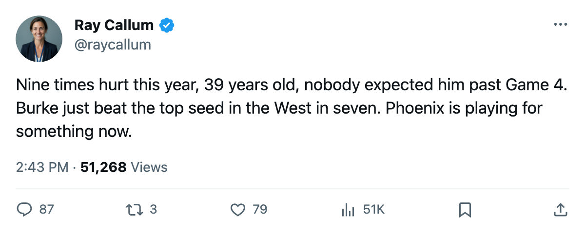

ELIMINATION NIGHT: Colorado goes out; the 39-year-old Burke did it
Sean Burke, shelved 9 times this season, finished 4-2 against the 1st-seed Avalanche and now faces Dallas.
 Ray CallumSenior correspondent · Home Ice Network
Ray CallumSenior correspondent · Home Ice Network
 Sean Burke86 stopped
Sean Burke86 stopped  Colorado Avalanche in Game 7, 4-3 in Denver on April 20, and sent the eighth-seeded
Colorado Avalanche in Game 7, 4-3 in Denver on April 20, and sent the eighth-seeded  Phoenix Coyotes to the second round against
Phoenix Coyotes to the second round against  Dallas Stars.
Dallas Stars.
Burke finished the series 4-2, 2.44 GAA, .909. He carried 9 injury spells into it, more than any goaltender except  Andrew Raycroft84. The league designated none of them by body part.
Andrew Raycroft84. The league designated none of them by body part.
Denver was the difference
PHX won three of four games at Colorado's building. The Coyotes' regular-season road record was 19-22. They took G1 (2-1), G5 (3-1) and G7 (4-3) from the 1st seed, which had a 24-17 home mark all year.
The season series between these clubs went 11 games, 7 of them decided by one goal. PHX managed 5-5-1. Nothing about the regular-season head-to-head suggested a winner in seven.
 Mike Johnson81 carried the offense with 9+2=11 in 7.
Mike Johnson81 carried the offense with 9+2=11 in 7.  Mike Sillinger83 (2+6=8 in 7) and
Mike Sillinger83 (2+6=8 in 7) and  Shane Doan81 (5+1=6 in 7) both topped six points. Colorado's
Shane Doan81 (5+1=6 in 7) both topped six points. Colorado's  Milan Hejduk88 (3+6=9 in 7) and
Milan Hejduk88 (3+6=9 in 7) and  Joe Sakic88 (4+3=7 in 7) scored enough; they just could not hold leads in Denver.
Joe Sakic88 (4+3=7 in 7) scored enough; they just could not hold leads in Denver.
What it means for Dallas
Dallas Stars swept  Detroit Red Wings in four, allowing 7 goals across the series.
Detroit Red Wings in four, allowing 7 goals across the series.  Marty Turco93 posted a 1.17 GAA. The Presidents' Trophy club now hosts a team that scored 241 goals in 82 games, the 13th-highest total in the league.
Marty Turco93 posted a 1.17 GAA. The Presidents' Trophy club now hosts a team that scored 241 goals in 82 games, the 13th-highest total in the league.
PHX went 2-2-1 against Dallas in the regular season, 13-15 on goals, with 3 one-goal games. The two clubs meet Friday at Dallas.
The Coyotes' 59 injury spells and 385 days lost sit 10th in the league this season. Burke, the oldest goaltender still standing, has not been one of them since March 30.
